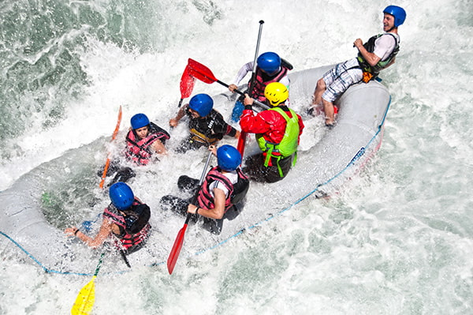

Nossos Passeios
Conheça as opções de rafting da Água Brava. Cada percurso possui características próprias, com diferentes níveis de dificuldade e duração.

Passeio Aventura nas Corredeiras
Nível de dificuldade: Moderado
Ideal para quem busca emoção e diversão em meio à natureza. O percurso passa por corredeiras, pequenas quedas e trechos tranquilos, acompanhado por instrutores que orientam o grupo durante toda a descida.
Indicado para iniciantes com orientação e condições adequadas.
.jpg)
Passeio Rio Tranquilo
Nível de dificuldade: Fácil
Uma experiência para apreciar as paisagens naturais e aproveitar um passeio tranquilo pelo rio. Com águas mais calmas e pequenas corredeiras, é uma ótima opção para quem deseja conhecer o rafting e se divertir em grupo.
Ideal para iniciantes, respeitando os requisitos de segurança.
.jpg)
Passeio Desafio Radical
Nível de dificuldade: Difícil
Uma aventura para quem procura mais adrenalina. O percurso apresenta corredeiras intensas, curvas e trechos que exigem coordenação e trabalho em equipe. Os participantes recebem instruções de segurança antes de iniciar a descida.
Indicado para participantes com experiência, conforme avaliação dos instrutores.
Compare nossos passeios
| Passeio | Dificuldade | Duração | Indicação |
|---|---|---|---|
| Rio Tranquilo | Fácil | 1 hora | Iniciantes |
| Aventura nas Corredeiras | Moderado | 2 horas | Quem busca aventura |
| Desafio Radical | Difícil | 3 horas | Pessoas experientes |
| Expedição na Natureza | Fácil | 1h30 | Amantes da natureza |
| Rafting em Família | Fácil | 1h30 | Famílias |
| Travessia Selvagem | Moderado | 2h30 | Quem busca novos desafios |